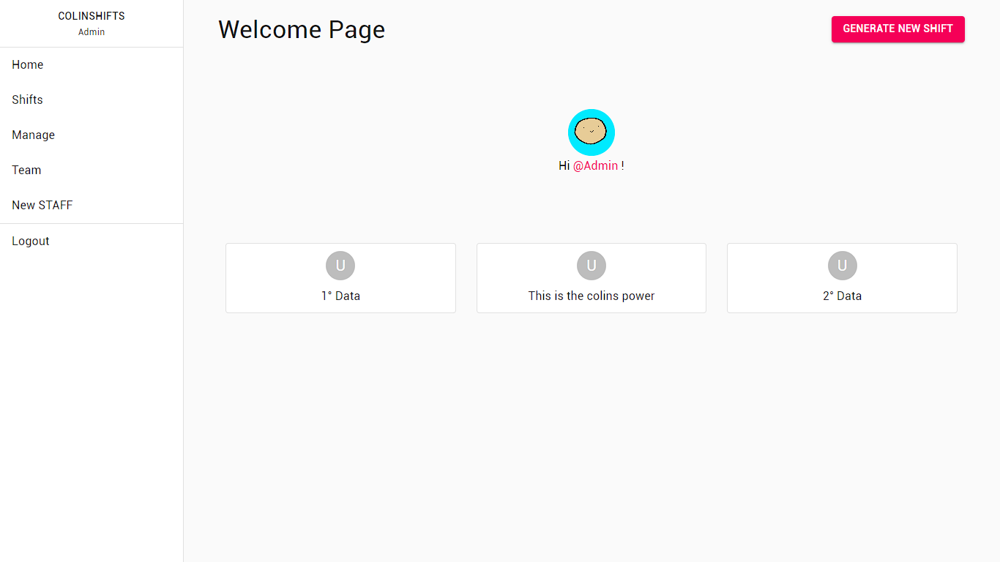
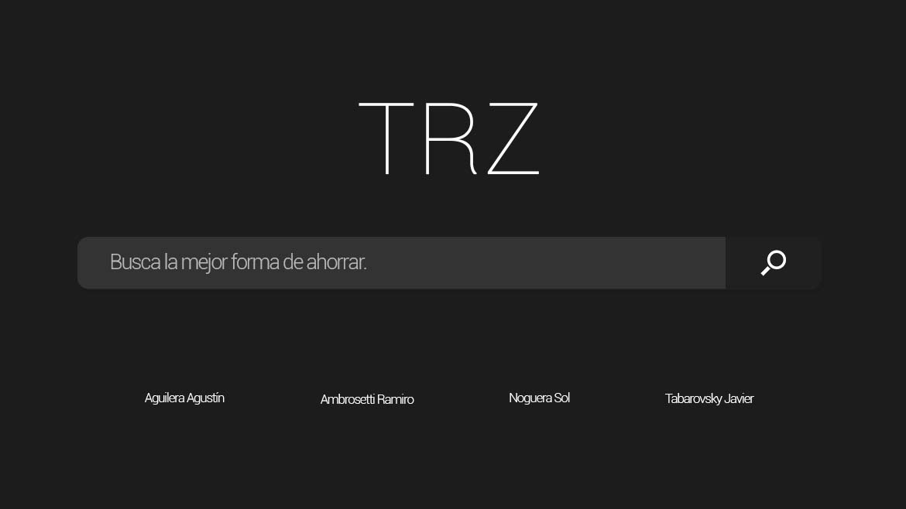
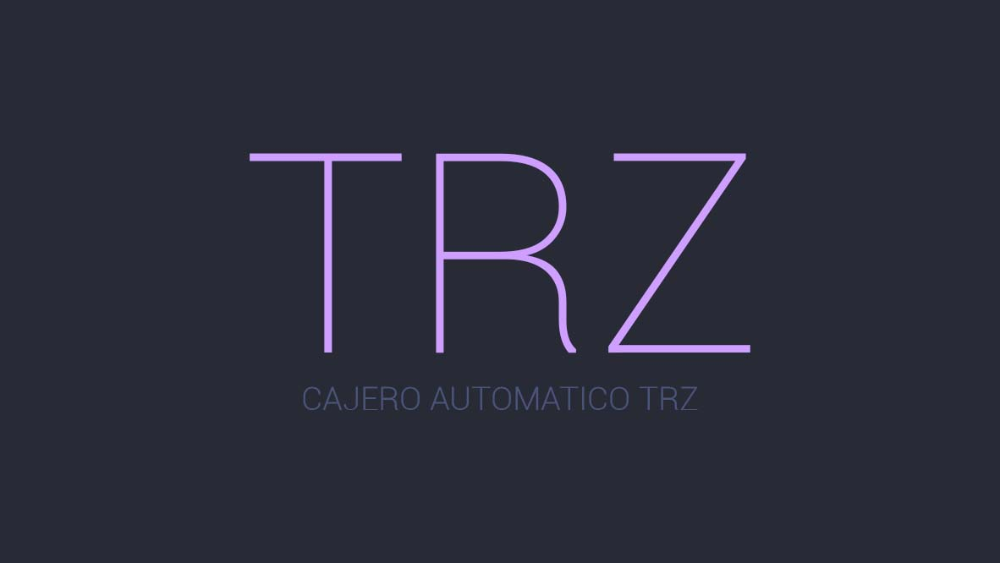

ColinShifts
Una página web de administración y generación de turnos médicos. A demás, se puede crear un STAFF (médico) y gestionar los turnos: validarlos o cancelarlos
Github Ver Online

TRZearcher
Una aplicación de escritorio, basada en un buscador de productos gamers. Este buscador te encontrará el mejor precio sobre un producto en diversas páginas y exportar la información en un formato agradable para el usuario
Github

Cajero Automático TRZ
Simulación de un cajero automático usando JAVA, sin base de datos de ningún tipo. En el mismo se puede realizar transacciones, depositos y extracciones.
GithubBanco TRZ
Proyecto realizado de forma autónoma, en formato web. La pagina web BancoTRZ tiene la intención de simular un banco real, en donde un usuario puede consultar su HomeBanking y realizar operaciones.
Github Ver Online